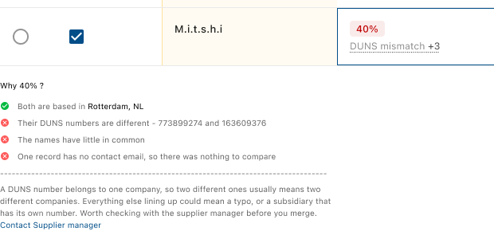
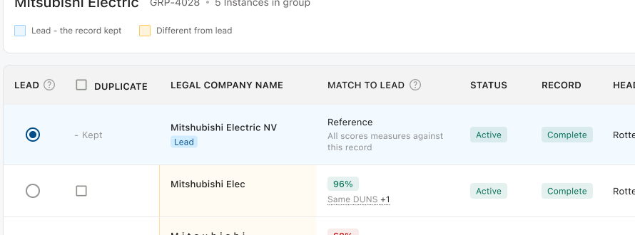
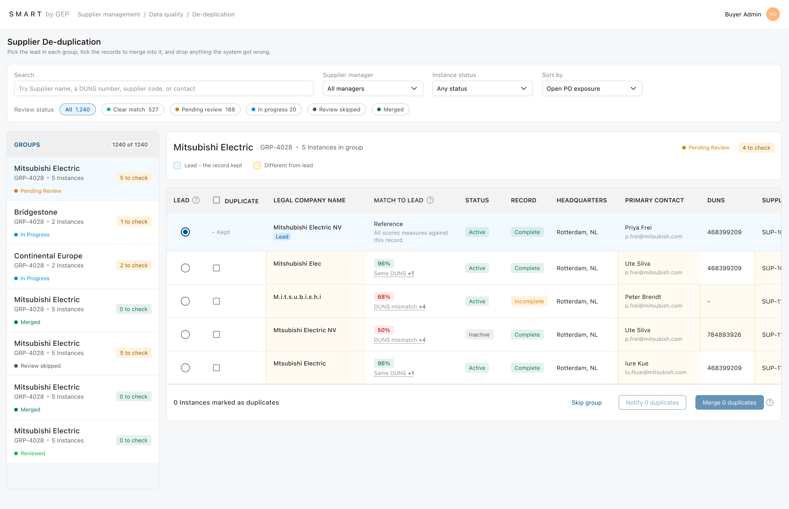
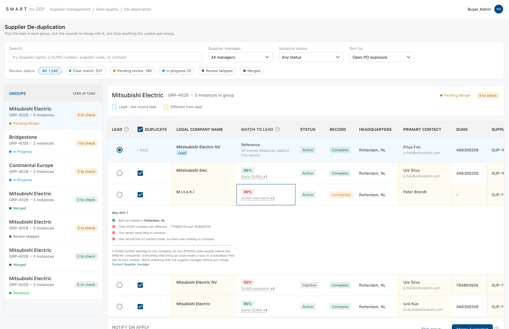
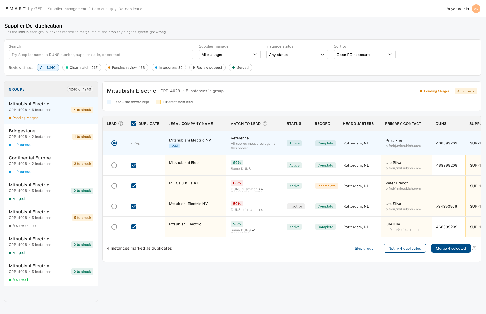
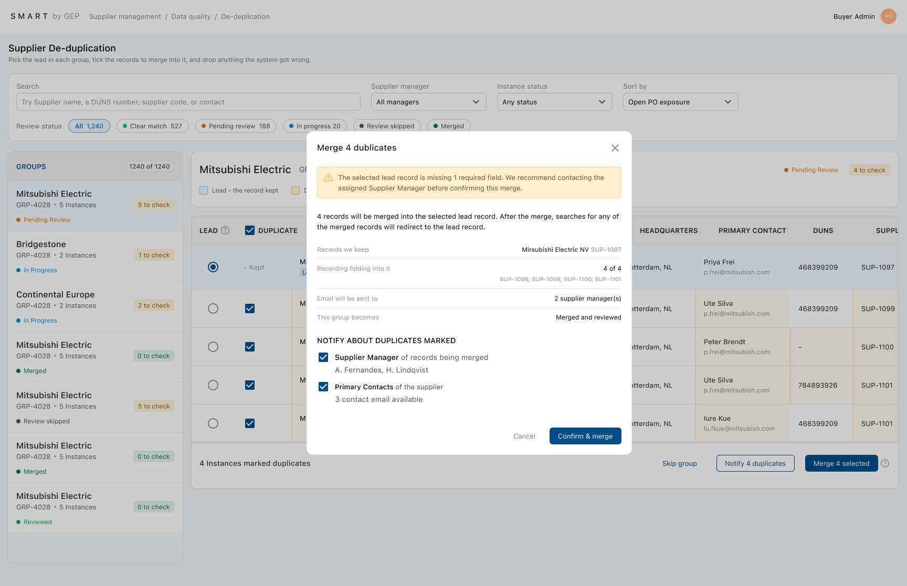
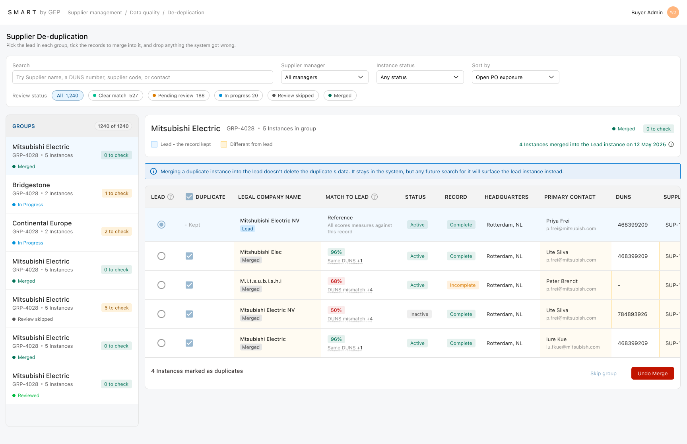
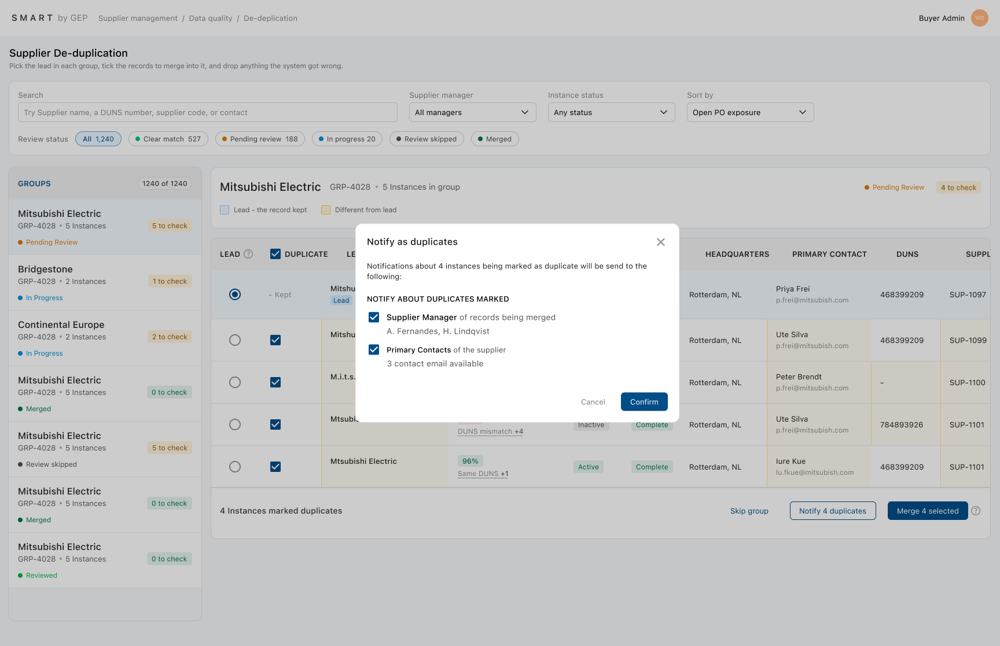
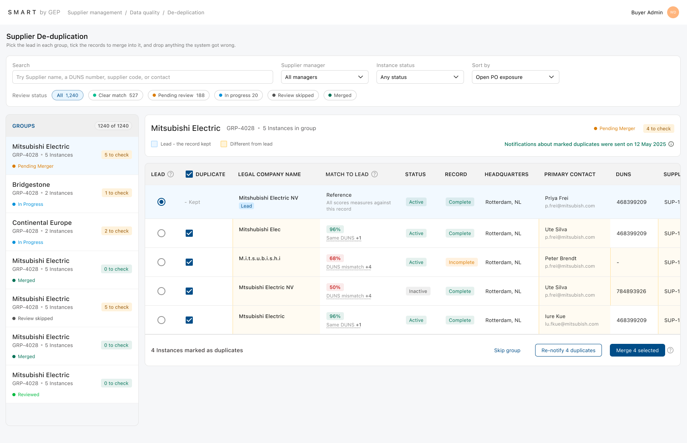

Supplier de-duplication
"The system can only suggest a match. A person has to decide." That's really the whole problem this project is about — how much to automate, and how to make people trust the suggestion enough to act on it.
The problem, and why it's tricky
Problem: Duplicate supplier records created by different Supplier Managers make it difficult to maintain a single source of truth. With over 100,000 supplier records, manual identification of duplicates is time-consuming, error-prone, and does not scale.
Ask: design a way for a Buyer Admin to find, review, and clean up these duplicates, even with 100,000+ records.
Core tension: the system can only suggest a match. A person still has to decide. Everything below comes back to that one point — how much to automate, and how to make people trust the suggestion enough to act on it.
What the brief is actually asking
Help someone trust the system's guess enough to act on it, again and again.
Every requirement in the brief is there to support one moment: when an Admin looks at a group and decides what to do with it. Search, filters, bulk actions, and notifications all come after getting that one moment right.
Merging feels permanent to the person doing it, because live POs sit on these records. Show someone "87% match" with no reason behind it, and they hesitate instead of acting. So a number on its own doesn't really answer the brief, even if it's technically there.
Key points pulled from the PRD
Went through the brief and pulled out the parts that actually shape the design, then grouped them under the areas the brief covers.
Scale
Over 100,000 supplier records in the system. Duplicates form groups, and each group belongs to one supplier.
Detection
The system finds likely duplicates on its own and gives each one a confidence score. It compares legal name, status, head office, main contact, contact email, DUNS number, supplier code, and supplier manager.
Decision-making
The Admin checks which records are really duplicates and picks one as the lead for each group. Changes then apply to everything marked, in one go.
Discovery
The Admin needs to search for one specific supplier record, not just scroll through groups.
Communication
Option to notify the Supplier Manager in charge of a record, and/or the contacts at the supplier.
Main pain points
Before designing anything, tried to put myself in the Admin's shoes and write down what actually makes this job hard, day to day. These points ended up mattering more than the requirement list itself, because they explain why each requirement is there.
"I don't know why the system thinks these are duplicates."
A number with no reason behind it doesn't earn any trust. So the safe move is to do nothing, which defeats the whole point of automating this.
"I don't know which record is safe to keep."
There are several records, and one of them has to become the real one going forward. Pick the wrong one, and purchase orders break later.
"I'm not sure if this one is a duplicate or not."
Some cases really are unclear. There needs to be a way to leave something undecided instead of forcing a yes or no.
"There are thousands of these — I can't review them one by one forever."
There are too many of these to check carefully one at a time. The Admin needs to move fast.
"If I make a mistake, can I undo it?"
Merging feels permanent and risky, with no safety net in sight.
"Who do I tell if the data itself is wrong?"
Sometimes it's not even a duplicate — a record just has old or wrong information, and there's no clear way to flag that from here.
The core problem, stated in one line
Help the Admin trust a suggested match enough to act on it, quickly, without breaking anything downstream.
Every other requirement only matters if this part works. Search, filters, bulk actions, notifications — all of it assumes the Admin already trusts what's in front of them. There's also no existing pattern to copy here. Search bars and filter dropdowns are solved problems. Explaining an algorithm's confidence in a way people actually trust is not. So this got the most design time, not the least.
| Priority | Feature | Reasoning |
|---|---|---|
| 1 · Core | Confidence score + explanation | Nothing else matters if this isn't trusted |
| 1 · Core | Lead selection + record comparison | The actual decision being made — it depends on trust |
| 2 · Enabling | A way to leave a record undecided | Needed so the core decision isn't forced into a false yes/no |
| 2 · Enabling | Status that reflects real progress | If people trust the decision, they need to trust the tracking too |
| 3 · Scale | Search, filters, sort, virtual scrolling | Makes the main flow usable with 1,200+ groups, but only matters once the flow works |
| 3 · Scale | Bulk merge | A shortcut on top of the main decision, only for cases with no real judgment call |
| 4 · Supporting | Notifications | Tells people what happened. Doesn't change how the decision gets made |
| 4 · Supporting | Reversibility / undo | A safety net around the core action, not the action itself |
The judgment call here: treated confidence and decision-making as the actual product, and treated search, filters, bulk actions, and notifications as things built around it — needed, but not the main point. That's the opposite of working through the brief top to bottom like a checklist. It meant spending the least time on the easy parts, and the most time on the one part with no obvious right answer.
Open questions, and the assumptions made to keep moving
Things the brief doesn't answer, and what was assumed instead of getting stuck on them.
Open questions
- ?No logic given for how the confidence score should actually be calculated
- ?No answer for what happens to merged records' own data — overwritten, deleted, kept?
- ?The brief talks about notifying at the group level, but the wording says "the Supplier Manager responsible for a supplier instance" — singular. That sounds like it should work per record, not just per group
- ?Nothing about undo, even though merging is basically permanent
- ?The brief explains why duplicates happen — different Supplier Managers entering the same thing — but only asks for cleanup, never how to stop the next one
Assumptions made to fill the gaps
- →A DUNS number is reliable when it's there — it's the strongest ID available
- →About 2–4% of records are duplicates. The brief gives no real number, and a much lower rate would make the scale problem not really a problem
- →A supplier hierarchy already exists for linking related companies — the brief doesn't say either way, so this was assumed
- →The review and grouping thresholds here are just a starting point. They'll need real usage data to get right
Sketches and understanding
How the groups, score, and decisions actually work
A. How groups form
Every pair of records gets compared on name, DUNS number, head office, supplier code, and email domain. If two records look similar, they get linked. These links chain together — if A matches B, and B matches C, then A, B, and C all become one group, even if A and C never matched directly. Only records that pass a certain score ever form a group. Most of the 100,000+ records never even show up in the queue.
B. The confidence score — three passes to get right
Plain weighted average
Fails on an easy real case: "IBM New York" and "IBM London" have the same name but are different companies. This method would still score them as a high match, which is wrong.
Split hard identifiers from soft attributes
Hard identifiers: DUNS number and supplier code. These come from outside the company, so a match actually means something. Soft attributes: name, location, email domain. These can match by coincidence.
Found while writing the explanation
Case: both records have a DUNS number, and the numbers are different. The first version of the model gave no penalty for this — it just didn't give a bonus either. That's wrong. Two different DUNS numbers is a strong sign these are separate companies, not a neutral sign. Fixed it by adding a cap on the score, not a penalty that multiplies — multipliers stack up into numbers nobody can check by eye.
Final simplified rule
- Same DUNS on both95% · done
- Legal name match50 / 40 / 25 / 10
- Head office — same city+30
- Head office — same country+15
- Email domain match+20
- Cap: DUNS present but different≤ 40
- Cap: different country≤ 50
- Cap: no DUNS on either side≤ 85
- Below 30 points totalnot grouped
Worked example — DUNS present, not matching
Mitsubishi Electric Corporation vs. Mitsubishi Electric KK
C. Explaining the score — a decision to simplify twice
The first version showed the full math: points, weights, caps. Cut that. Nobody reviewing 1,200 groups wants to check arithmetic — they just need to believe the number, not check it. Replaced it with plain findings and one sentence.
Why 40% — probably not the same company
✓ / ✗ / – show agree, disagree, or no evidence. A heading explains the number in plain words, and the last line says what to do next.
D. Choosing the lead record
The system picks one automatically, but the Admin can change it. Order it checks: active status → most complete record → most open POs → most recently updated → oldest. Open POs matter most in real use — fewer purchase orders to move after a merge.
E. What merging actually changes
Merged records keep their own data. The lead's values never overwrite them. If they did, it would hide the evidence in the comparison table and misrepresent what actually happened to the data. The lead only picks up values for fields it was missing — it never overwrites a field that already has something in it. Old codes and names still point to the lead when someone searches, so old purchase orders don't break.
F. Marking duplicates — kept it to a single checkbox
Each row has one Duplicate checkbox. It's ticked by default for every record that isn't the lead. Untick it to leave that record out of the merge — no extra steps, no reason needed.
This replaced an earlier version that asked for a reason every time you excluded a record. That solved a real problem on paper, but it added a confirm step to something that's just a selection, not a real decision. The real decision happens at Merge, not before.
G. Status — worked out from what's actually been done, not clicked by hand
Status shows the real state of the group. Nobody sets it by hand. Reviewed and Merged are kept separate on purpose — reviewing is a judgment call, merging is permanent. If they were the same status, you couldn't tell whether anything had actually been committed yet.
Built and tested at 1,240 groups
Not 6 groups — this is real scale, not a toy example.
Virtual scrolling
Only visible rows rendered.
Full-width filter bar
Keeps the side list clean — just groups, nothing else.
Sort by open PO exposure
The default sort. It's the only order with a real business reason — groups sitting on live POs are messing up spend numbers right now.
Match quality chips
Clear match, Pending review, In progress, Merged. You can see the shape of the backlog at a glance, not just one big number.
Keyboard navigation (J/K)
Lets you clear a long backlog without reaching for the mouse every time.
Bulk merge, gated
Only works on groups where the DUNS number matches — the one case with no real judgment call.
How much friction, based on how easy a mistake is to spot
A bad merge is loud — wrong PO, an angry manager, numbers that look off. Someone notices fast. Unticking a duplicate is quiet and easy to undo — nothing actually happens until Merge is clicked, so it doesn't need its own confirmation.
| Action | Confirms? | Asks |
|---|---|---|
| Merge selected | Yes | Which record survives, what folds in, what moves, who's notified |
| Notify supplier manager | Yes | Confirms nothing else in the group changes |
| Skip group | No | Nothing lost — reversible from the queue |
| Tick/untick Duplicate, change the lead | No | Just a selection — nothing commits until Merge |
What got cut
A reason-picker for excluding a record from a merge
Built this first. Untick a record, and it would ask why — different company, subsidiary, wrong data, and so on. Dropped it because it treated a simple selection like a big decision.
A manual "mark reviewed" button
Couldn't find a real reason to keep it. If status comes from what's actually been done, a manual button just lets someone fake progress.
Letting the Admin pick a field value from any record to fix the lead
This solved a real problem: what if the record you keep has wrong data in it? But it meant editing supplier data from the de-dup screen.
Letting the Admin create a brand-new lead record
Rejected right away. This is exactly the behaviour that causes duplicates in the first place, and a brand-new record has no PO history.
Early explorations and things I got stuck on
Some decisions weren't obvious from the start. A few small UX questions had to get worked out before the final screens made sense.
How much reasoning to show for the score
Two options: a short one-line tag next to the score, like "DUNS mismatch +3", or the full reasoning laid out in the table cell. Ended up doing both — a short tag for scanning quickly, and the full plain-language reasoning available if you click in.

Filters as pills, not a dropdown
Thought about putting review status in a dropdown to save space. Decided on pills instead. Admins use it a lot, and it's important, so it should stay visible and one click away, not hidden in a menu.
Ticking a duplicate shouldn't ask for anything
The question: should ticking the Duplicate checkbox trigger a confirmation, or a notification, every single time? Decided no — the tick can be undone, so it doesn't need to interrupt anyone. Once everything is ticked, the Admin can just click "Notify duplicates" directly.
What search actually searches
The question: does search look at groups, or at the records inside the groups? Decided it needs to search inside every group — legal name, DUNS, supplier code, contact — so the Admin can go straight to the one record they want instead of opening group after group.
Marking what's different from the lead
Needed a quick way to show which fields on a duplicate are different from the lead. Went with a soft yellow background on any cell that's different, and a blue background on the lead row. That way both things are obvious right away — which record is being kept, and what doesn't match.

Where it landed
- 1Two-panel layout — a group queue on the left, a comparison view on the right.
- 2Comparison table shows all data points side by side, with a single Duplicate checkbox per row.
- 3Confidence explained in plain language, not shown as math.
- 4Every non-lead record ends up in one of three places: merged into the lead, left unticked for a later look, or ticked and waiting to be merged.
- 5Status derived automatically — Pending, Reviewed, Merged, or Review skipped — never set by hand.
- 6Notifications available per record and per group, matching the brief's actual wording.
- 7Merging and notifying ask for confirmation; selecting and skipping don't — the friction is on purpose, not the same everywhere.







What this taught me
The hardest problems weren't even on the requirements list. The scoring logic and the status model both needed real thinking that the brief never asked for.
Writing down the pain points before designing anything changed the whole order of priorities. A requirement list treats every line as equally important. The pain points made it obvious that trust in the confidence score was the one thing everything else depended on.
The best bug wasn't found by testing — it was found by trying to explain the system in plain words. The DUNS-mismatch gap in the scoring only showed up once I had to write a plain reason for a score.
Cutting features mattered more than adding them. The reason-picker is the clearest example — it got built, used, and then cut, because it treated a simple selection like a big decision. Catching that matters more than having a longer feature list.
The one idea holding this whole design together: the system suggests, the person decides. Every suggestion comes with a reason, and nothing is final until the Admin actually clicks Merge. That's what makes it possible to trust automation enough to actually use it at scale.